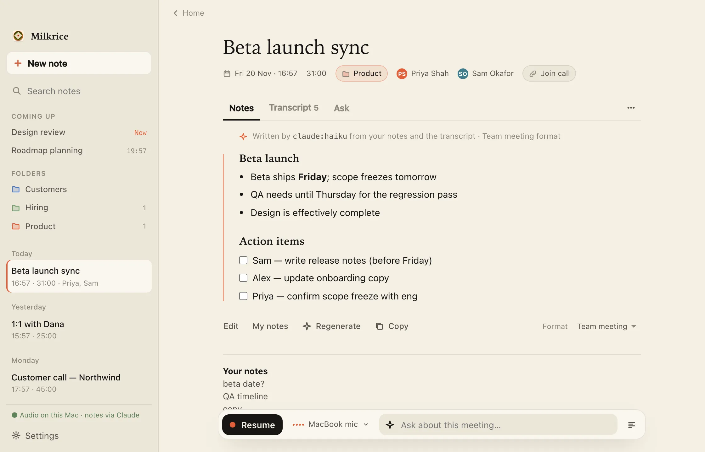

Claude Code
Claude Haiku by default, through the claude command you installed. Tools are turned off and the session isn't saved.
Open source · on-device · macOS
Milkrice listens to your calls, transcribes them on-device with open speech models, and fills in your rough notes with the AI you already use. No account, no bot joining the call, and no server of ours in between.
brew install --cask thekindofme/tap/milkrice
Apple Silicon, macOS 14.2 or later. MIT licensed. View source on GitHub
In Sri Lanka, kiribath is what you cook for a beginning: the new year, a new job, the first day of anything. Rice simmered in coconut milk, pressed flat, cut into diamonds. Milkrice does much the same with a meeting. It takes everything that was said, presses it down, and hands you a few neat pieces.
How it works
Milkrice reads the calendars already on your Mac. It can nudge you when a meeting begins or start on its own, and it notices unscheduled Zoom, Teams, Webex, Slack and FaceTime calls. When the meeting is over and the room goes quiet, it stops.
Write as much or as little as you like. Milkrice hears your microphone and the call audio, and transcribes both live on your Mac, telling the speakers apart as it goes.
Afterwards, Milkrice expands your notes with detail from the transcript, using a template that fits the meeting: a 1:1, a stand-up, a customer call, an interview. Then ask it for what you need next, like the follow-up email.
The write-up is yours to edit. Action items tick off, and the note says which model wrote it. Search every note and transcript, ask questions across meetings, or export any note as Markdown.
Where your words go
When Milkrice writes up a meeting, only the text goes out, and only to the AI you chose.
Recordings are off unless you turn them on.
What's inside

Bring your own AI
Milkrice runs the command-line tool you're already signed into, on your own subscription. No API keys, and nothing of ours in the middle. Pick one during setup; until you do, nothing is sent anywhere.
Claude Haiku by default, through the claude command you installed. Tools are turned off and the session isn't saved.
Luna through the codex command you installed, in a read-only sandbox with an ephemeral session.
A model you've pulled, running on your own Mac. Milkrice talks to it at 127.0.0.1 and nothing leaves your computer.
nothing sentTranscription doesn't need any of them. It always runs on your Mac.
For your agents
Milkrice includes a milkrice command, an MCP server and a skill for Claude Code and Codex. Connect them from Settings, Agents. Access is read-only, and every passage carries a label, so an agent never mistakes a model's summary for something you wrote.
$ milkrice ls --since 7d id date len title · people [content] 9f2c41ab 2026-11-13 10:00 31m Design sync · Priya, Tom [notes ai tx:212] 4be07d19 2026-11-12 15:30 48m Pricing review · Sam [ai tx:388] $ milkrice show 9f2c notes,ai # Design sync (9f2c41ab) 2026-11-13 10:00 · 31m · with Priya, Tom == NOTES (written by the user) == - ship onboarding v2 behind flag == AI SUMMARY (generated by claude:haiku; may contain errors) == Priya will finish the empty states by Friday… $ milkrice mcp # list_meetings, get_meeting, get_transcript, search
Obsidian and plain Markdown
Point Milkrice at an Obsidian vault, or any folder, and it mirrors each meeting there as plain Markdown with YAML front matter. One file per meeting, kept up to date as the note changes.
[[links]], and the date linked to your daily note.--- title: Design sync date: 2026-11-13 duration_min: 31 attendees: ["[[Priya]]", "[[Tom]]"] tags: [meeting, milkrice] summary_by: claude:haiku --- <!-- milkrice:start --> # Design sync [[2026-11-13]] · 10:00 · 31 min · with [[Priya]], [[Tom]] ## Summary Priya will finish the empty states by Friday… ## My notes - ship onboarding v2 behind flag <!-- milkrice:end --> Your own thoughts go here. They stay put.
Open source
Why Milkrice
Granola and its cloud cousins are polished and quick to set up. Milkrice makes a different trade: your audio never leaves your Mac, there's no account or subscription, and your notes are written by the AI you already pay for.
| Feature | Milkrice | Granola | Otter, Fireflies | Other open-source notetakers |
|---|---|---|---|---|
| Where audio is transcribed | On your Mac | Cloud | Cloud | On your computer |
| Joins the call as a bot | Never | No | By default | No |
| Account or subscription | Neither | Account; paid plans from $14/mo | Account; paid plans | Usually none; some have paid tiers |
| Who writes the notes | Your own Claude Code or Codex, or Ollama offline | Their AI, in their cloud | Their AI, in their cloud | Varies: a local model, or an API key |
| Your agents can read your meetings | Free local CLI + MCP | Hosted MCP; transcripts on paid plans | Hosted MCP | Varies; some behind a paid tier |
| Open source | MIT | No | No | Mostly MIT |
| Windows, phone | Mac only (Apple Silicon) | Windows, iPhone | Everywhere | Some run on Windows and Linux |
Checked 20 November 2026.Full comparison with Meetily, Minutes, Yogurt, Fathom and more
Choose Milkrice if
Choose something else if
Questions
Very likely, yes. Many places require the consent of everyone on a call before it is recorded or transcribed, and workplaces often have their own rules. Milkrice doesn't add a bot or announce itself, so letting people know is your responsibility. A short note on recording consent.
An Apple Silicon Mac with macOS 14.2 or later. Speech models run on the CPU and Whisper can use Metal. They take between about 55 MB and 1.7 GB of disk, depending on which you choose.
For written notes you need one of: Claude Code or Codex installed and signed in, or Ollama with a model pulled. Transcription works without any of them.
Download the DMG from the latest release, open it and drag Milkrice to Applications. Or use Homebrew: brew install --cask thekindofme/tap/milkrice.
On first launch, Milkrice asks for the microphone, calendars and "Screen & System Audio Recording". The last one is how it hears the other people on a call; your screen is never captured.
Audio, never. After a meeting (automatically, unless you turn that off in Settings) and whenever you ask a question, Milkrice sends the meeting's text, meaning the transcript, your notes, the title and attendee names, to the AI you chose, through that provider's own command-line tool. If you chose Ollama, it stays on your Mac. The privacy policy has the details.
It depends on the model. Parakeet v2 and Moonshine are English-only, Parakeet v3 and Canary 1B cover 25 European languages, SenseVoice handles Chinese, Cantonese, English, Japanese and Korean, and Whisper covers 99.
Yes. Milkrice is open source under the MIT License, so you can read every line that touches your audio, build it yourself, and fork it. More on the license.
Quit Milkrice and delete ~/Library/
brew install --cask thekindofme/tap/milkrice
Apple Silicon, macOS 14.2 or later.